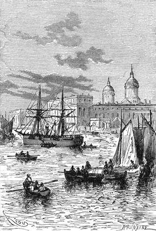

Geometrické podrobnosti. – Výpočet obsahu balonu. – Dvojitý balon. – Obal. – Loďka. – Tajemný přístroj. – Potraviny. – Dodatečná příprava.
Doktor Fergusson byl se již dlouho zabýval podrobnostmi své výpravy. Lze si představiti, že balon, toto podivuhodné plavidlo určené k jeho dopravě vzduchem, byl předmětem jeho neustálého přemýšlení.
Nechtě dáti balonu rozměry příliš veliké, ustanovil se předkem na tom, že jej nadme vodíkem, který jest čtrnáckrát a půl lehčí vzduchu. Výroba tohoto plynu je snadná, a na vzduchoplaveckých výpravách dodělal se nejlepších úspěchů.
Doktor poznal výpočty velice přesnými, že vzhledem k věcem k jeho cestě a pro jeho přístroj nezbytně potřebným musí vzíti s sebou váhu čtyř tisíc liber; pročež bylo vyzkoumati, jaká vzestupná síla jest s to, aby unesla tuto váhu, a jaký tudíž jest obsah její.
Váha čtyř tisíc liber rovná se čtyřicítičtyřem tisícům osmi stům čtyřicítisedmi krychlovým stopám[20] vytlačeného vzduchu, čili jinými slovy: čtyřicetčtyři tisíce osm set čtyřicetsedm krychlových stop vzduchu váží asi čtyři tisíce liber.
Dá-li se balonu tento obsah čtyřicetičtyř tisíc osmi set čtyřiceti sedmi krychlových stop a naplní-li se na místě vzduchu vodíkem, který jsa čtrnáctkrát a půl lehčí, váží toliko dvě stě sedmdesátšest liber, jeví se nesrovnalost v rovnováze, to jest rozdíl asi tří tisíc sedmi set osmdesáti liber. V tomto rozdílu pak mezi vahou plynu obsaženého v baloně a mezi vahou vzduchu jej objímajícího záleží vzestupná síla balonu.
Avšak kdyby se do balonu vpustilo čtyřicetčtyři tisíce osm set čtyřicetsedm krychlových stop dotčeného plynu, byl by zcela naplněn; leč to nesmí býti, neboť čím více stoupá balon do méně hustých vrstev vzduchových, tím více roztahuje se plyn v něm uzavřený a protrhl by se za nedlouho obal. Pročež naplňují se balony obyčejně jenom do dvou třetin.
Doktor pak prohlédaje k jistému zámyslu jedině jemu známému, odhodlal se naplniti svůj balon jen zpola, a poněvadž musil vzíti s sebou čtyřicetčtyři tisíce osm set čtyřicet sedm krychlových stop vodíku, dáti balonu obsah téměř dvojnásobný.
Sestrojil jej do protáhlého tvaru, o němž se ví, že jest nejvýhodnější; vodorovný průměr činil padesát stop a kolmý průměr sedmdesátpět[21]; nabyl takto kulovitého tělesa, jehož obsah páčil se rovným číslem na devadesát tisíc krychlových stop.
Kdyby doktor Fergusson byl mohl použíti dvou balonů, bylo by mu přibylo čáky na zdar; lzeť vskutku, praskne-li jeden v povětří, udržeti se druhým, vyhodí-li se přítěž. Ale říditi dva balony jest věc velice nesnadná, když jde o to, aby se jim zachovala rovná síla vzestupná.
Dlouho rozvažovav sloučil Fergusson důmyslnou úpravou výhody dvou balonův a vyhnul se jich potížím; sestrojili dva nestejné veliké a vstrčil jeden do druhého. Jeho vnější balon, jemuž ponechal rozměry svrchu vytčené, zavíral v sobě menší ballon téhož tvaru, který měl pouze čtyřicetpět stop ve vodorovném a šedesát osm stop v kolmém průměru. Obsah tohoto vniterního balonu páčil se tudíž jenom na šedesátsedm tisíc krychlových stop; měl plovati v plynu jej obklopujícím; z balonu do balonu šla záklopka, mohouc je v čas potřeby uvésti navzájem ve spojení.
Tato úprava měla do sebe tu výhodu, kdyby pro sestup bylo třeba vypustiti plyn, že by se nejprve vypustil plyn z velkého balonu; kdyby pak se musil vyprázdniti načisto, zůstal by malý neporušen; po té bylo by lze odstraniti vnější obal jako nepohodlné břímě a osamotnělý druhý balon nebyl by větru hříčkou, jakou bývají balony napolo splasklé.
Ba ještě více: kdyby vnější balon stihla nehoda, kdyby se protrhl, mohl býti druhý zachráněn.
Dva balony byly zhotoveny z lyonské křižované dykyty napuštěné gutaperčou. Tato klovatina vyniká úplnou neprodyšností a vzdoruje naprosto kyselinám a plynům. Dykyta byla dvojitě složena na vrchním polu koule, kde jest napětí největší.

Dne 16. února spustil „Resolute“ kotvu před Greenwichem.
V tomto obalu mohl se plyn udržeti po dobu neobmezenou. Vážil půl libry na devět čtverečných stop. Ježto pak povrch vnějšího balonu měřil asi jedenáct tisíc šest set čtverečných stop, vážil obal jeho šest set padesát liber. Obal druhého balonu, jehož povrch měřil devět tisíc dvě stě čtverečných stop, vážil toliko pět set deset liber: úhrnem tedy jedenáct set šedesát liber.
Síť, která měla držeti loďku, byla spletena z provazů z konopí nadmíru pevného; dvěma záklopkám věnována péče co nejbedlivější, jako by se věnovala kormidlu lodnímu.
Loďka tvaru okrouhlého, mající v průměru patnácte stop, byla upletena z vrbového proutí, sesíleného lehkým železným postrojem, a vnitř opatřena zpruhami k tomu určenými, aby oslabovaly nárazy. Její váha a váha sítě nepřevyšovala dvě stě osmdesát liber.
Mimo to dal si doktor udělati čtyři schránky z železného plechu ztlouští dvou čárek; byly mezi sebou spojeny rourami kohoutky opatřenými; k tomu přidal hadici v průměru asi dvou palců, která končila dvěma rovnými rameny nestejně dlouhými, z nichžto větší měřilo dvacetpět a kratší pouze patnácte stop.
Plechové schránky umístěny v loďce tím způsobem, že zabíraly prostor co nejmenší; hadice, která měla se přidělati až později, zabalena o sobě, jakož i velmi silný elektrický sloup Bunsenův. Tento přístroj byl sestaven tak důmyslně, že nevážil více než sedm set liber spolu s dvacítipěti gallony[22] vody obsažené ve zvláštní schránce.
Nástroje na cestu určené záležely ve dvou teploměrech, dvou tlakoměrech, dvou bussolách, sextantu, dvou časoměrech, umělém obzorníku a výškoměru k zachycování předmětů vzdálených a nepřístupných. – Hvězdárna greenwichská propůjčila se k službám doktorovi, jenž ostatně nehodlal konati fysická pozorování; chtěl jedině stanoviti svůj směr a označovati polohu hlavních řek, hor a měst.
Opatřil se třemi železnými kotvami dobře vyzkoušenými a řebříkem z lehkého, pevného hedvábu zdélí asi padesáti stop.
Rovněž vypočetl zevrubně váhu svých potravin; skládaly se z čaje, kávy, sucharů, z nasoleného masa a pemmikanu, přípravku, jenž maje nepatrný objem, chová v sobě mnoho výživných látek. Mimo dostatečnou zásobu kořalky dal si zhotoviti dvě schránky na vodu, do nichž se vešlo po dvacítidvou gallonech.
Požívání těchto různých potravin mělo ponenáhlu zmenšovati břímě nesené balonem. Neboť sluší podotknouti, že rovnováha balonu ve vzduchu je nadmíru citliva.
Úbytek váhy téměř nepatrný mívá v zápětí pošinutí velice značné.
Doktor nezapomněl ani na stan, jenž měl zastírati část loďky, ani na pokryvky, které byly jediným cestovním ložem, ani na lovcovy ručnice, ani na zásobu prachu a kulí.
Stůjž zde přehledný soubor jeho rozličných výpočtů.
Fergusson...................................................................135 liber
Kennedy.....................................................................153 „
Joe................................................................................120 „
váha prvního balonu................................................650 „
váha druhého balonu...............................................510 „
loďka a síť..................................................................280 „
kotvy, nástroje, }
ručnice, pokryvky, }
stan, všeliké náčiní, }................................................190 „
maso, pemmikan, }
suchary, čaj, }
káva, kořalka, }.........................................................386 „
voda............................................................................400 „
přístroj........................................................................700 „
váha vodíku..............................................................276 „
přítěž..........................................................................200 „
Úhrnem.................................................................. 4000 liber.
To byl rozpočet čtyř tisíc liber, které doktor Fergusson hodlal vzíti s sebou; přibral toliko dvě stě liber přítěže „jenom pro nepředvídané případy“, jak říkal, neboť doufal bezpečně vzhledem k svému přístroji, že mu jí užiti nebude.